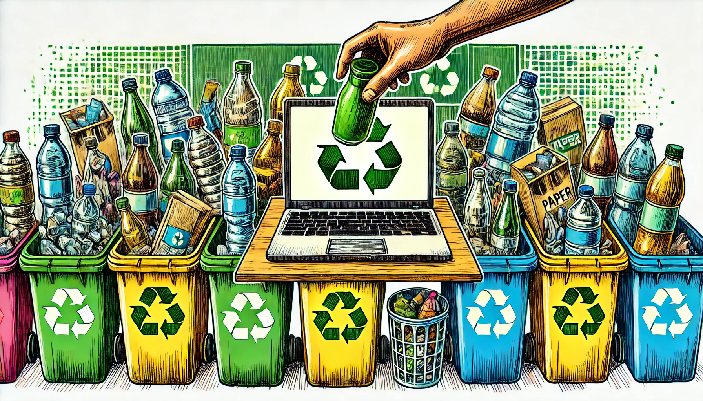

Name
What gender do you identify as?
Male
Female
Other
Furry
Age
What type of housing do you live in?
Apartment/unit
Townhouse
Detached house
Other (please specify)
Do you have access to separate bins for the following at home? (Select all that apply)
General waste
Mixed recycling (glass, plastic, paper)
Paper & cardboard
Food & garden organics (FOGO)
Glass
E-waste
On a scale of 1-5, how would you rate your recycling knowledge?
(1 = Not at all knowledgeable, 5 = Very knowledgeable)
How often do you recycle at home?
(1 = Never, 5 = Always)
7. Which of the following actions do you take when recycling at home? (Select all that apply)
Check the recycling label
Rinse or clean containers
Remove lids from bottles
Separate soft & hard plastics
Separate different materials
8. How confident are you in segregating what is recyclable in your home? (1-5 scale)
Plastic items
Glass items
Metal items
Soft plastics
Batteries and e-waste
11. What are your biggest concerns regarding recycling in Brisbane? (Select all that apply)
Lack of recycling infrastructure
Misunderstanding of recycling rules
Lack of trust in recycling process
Inconvenience of accessing drop-off locations
Limited space in household bins
Other
12. Do you trust that items placed in your recycling bin are recycled?
( 1 – 100 scale)
16. Which of the following would make you recycle more? (Select all that apply)
Better access to bins
Larger recycling bins
Clearer labels/info
Incentives or rewards
More transparency
None of the above
18. Do you currently engage in any of the following sustainable practices? (Select all that apply)
Repairing items
Buying second-hand
Avoiding single-use plastics
Composting food scraps
Reducing overall waste
Any comments or suggestions
Submit